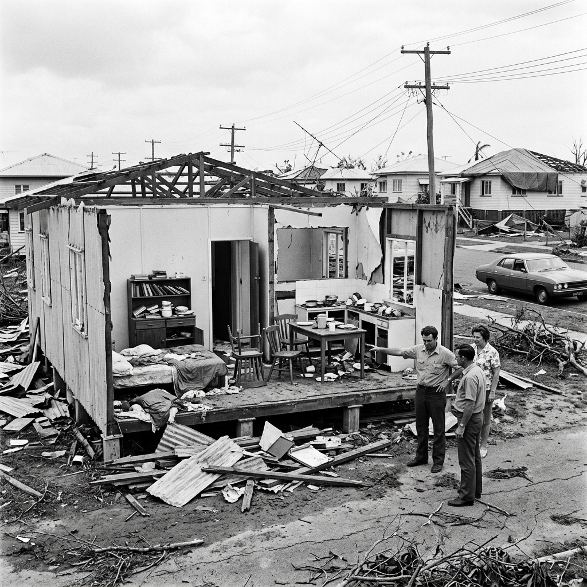

Christmas Eve in Townsville, 1971. Children had gone to bed expecting the morning to bring presents. What it brought instead was wind — gusts reaching 196 kilometres per hour tearing the roofs from the fibrous cement houses that lined the streets of a tropical city that had not been built to withstand what Cyclone Althea was about to serve. Three years before Tracy would flatten Darwin, Townsville would have its own reckoning with tropical cyclone forces — and what came out of that destruction would change Australian building codes for decades.
Cyclone Althea developed in the Coral Sea in mid-December 1971 and tracked steadily towards the North Queensland coast. Unlike the catastrophic surprise of Mahina or the Christmas chaos of Tracy, Althea arrived with enough warning that most residents could prepare. Shops were emptied of plywood and tape. Vehicles were moved to high ground. But preparation in the early 1970s was a personal and improvised business — there was no coordinated emergency management system, no mass evacuation infrastructure, and critically, no systematic understanding of how the standard Queensland home actually performed under cyclonic wind loads.
When Althea struck Townsville on Christmas Eve, that last question was answered in the most direct way possible. Street after street of low-set fibro homes — constructed for airflow in a hot, humid climate, not for structural integrity in a major cyclone — shed their roofs with devastating efficiency. Over 3,300 homes were damaged or destroyed. Three people lost their lives. But this was not merely destruction: it was data. And the engineers who walked through those streets in the days that followed were paying very careful attention.
“We drove through Townsville and I kept stopping the car to look at how the roofs had failed. And it was always the same four or five failure modes. I thought — if we can test those failure modes, we can prevent them.
The Buildings That Failed
The post-Althea engineering surveys revealed a consistent and troubling pattern. The homes that had failed — and failed catastrophically, with entire roofs lifted cleanly from walls — shared common characteristics: minimal roof-to-wall tie-down connections, timber purlins (the horizontal roof framing members) that were undersized for the wind loads they were being asked to carry, and a near-universal reliance on roof nails rather than structural metal connectors.
In many cases, the walls of destroyed houses were left completely intact once the roof was gone. The structure itself had not failed — the connection between the roof and the structure had failed. It was a finding of enormous practical significance: the solution was not to rebuild houses entirely, but to better connect what was already there. This insight would become the foundation of the cyclone-resistant building code reforms that Althea’s destruction made inevitable.

The Community Rebuilt
The recovery from Cyclone Althea was, by the standards of the time, swift and community-led. The relatively compact nature of the damage — concentrated in Townsville’s low-set residential suburbs rather than spread across an entire city like Tracy would be — allowed emergency repairs and support networks to function effectively. Neighbours helped neighbours clear debris. The football club used its facilities as a welfare centre. Tradespeople flooded in from Cairns and Brisbane.
But the most enduring recovery was institutional rather than physical. In 1972, James Cook University established the Cyclone Testing Station — a purpose-built research facility designed to conduct full-scale structural testing of building components under simulated cyclonic conditions. It was the first institution of its kind in the world. Over the decades since its founding, the CTS has directly shaped Australian building codes, evaluated every major cyclone’s structural impacts, and provided the engineering evidence base that now underpins cyclone-resistant construction across tropical Australia.